Identity System — 01
A visual identity for a residential interior design studio based in Aleppo, Syria — built on quiet, architectural restraint where photography of the work carries every chromatic decision.
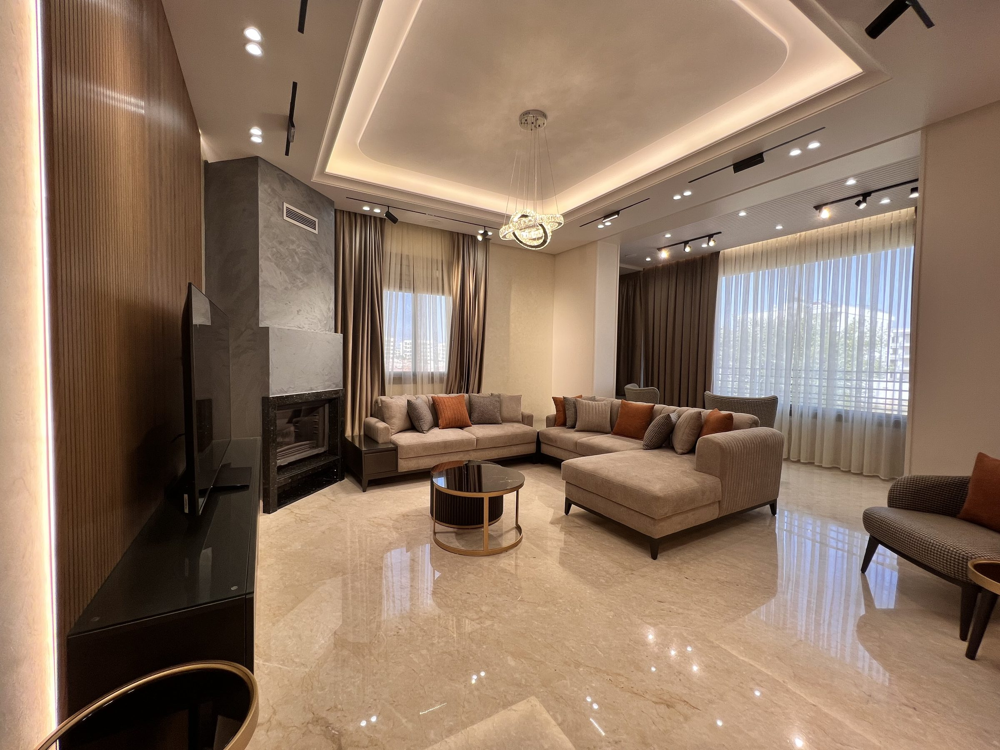
We design rooms to be lived in — not photographed.
Final Decor is a residential interior design studio. Our work is warm, modern and precise: backlit feature walls, layered cove lighting, honest wood and stone, and furniture arranged for real family life. The identity steps back so the spaces can speak.
The system is deliberately monochrome. Black ink, paper white, two greys — and hairline rules instead of decoration. Every trace of colour on the page comes from the photography of the rooms themselves.
The Mark
The symbol abstracts an architectural elevation — stepped towers rising from a single baseline, with punched openings that read as windows and light. It is drawn from straight edges only: no curves, no radius, echoing the structural clarity of the interiors.
The primary lockup stacks the mark over the wordmark. The mark may stand alone as an app icon or stamp. Preserve clear space equal to the width of one tower on every side; never redraw, rotate, or add effects.
Icon — Ink on paper
Icon — Reversed
Wordmark
Four neutrals and a single warm accent. The rooms still provide most of the colour — Terracotta appears on roughly one-tenth of the surface: labels, numbers, arrows, active states and links.
Europa Grotesk SH
Display & Headlines
A neo-grotesque with an even, humanist rhythm. Used at medium (500) for most headlines and bold (700) only for emphasis. Open, even tracking (+0.01em) and generous size do the work — never let it shout.
Inter
Latin text
The quiet luxury of a well-planned room is the way the light lands at seven in the evening.
Substituting the studio’s reference sans, Inter carries all running copy, navigation and captions at weights 400–500 with tight tracking.
IBM Plex Sans Arabic
Arabic text
الرفاهية الهادئة لغرفةٍ مدروسة هي الطريقة التي يسقط بها الضوء في السابعة مساءً.
خط عربي جروتيسك نظيف يوازن الحرف اللاتيني، ويحمل النص العربي في الموقع مع دعم كامل للاتجاه من اليمين إلى اليسار.
| Role | Sample | Family | Weight | Tracking |
|---|---|---|---|---|
| Display XL | Final Decor | Europa Grotesk | 500 | +0.01em |
| Display | Living Rooms | Europa Grotesk | 500 | +0.01em |
| Heading | Feature Walls | Europa Grotesk | 500 | +0.01em |
| Lead | Warm, modern interiors. | Inter | 400 | −0.011em |
| Body | Running paragraph copy. | Inter | 400 | −0.011em |
| Caption | Aleppo · Syria | Inter | 500 | 0.14em |
An editorial two-column grid on a 1440px canvas. Sharp corners everywhere — 0px radius on images, cards, inputs and buttons. Depth comes from photography and whitespace, never from shadow.
Photography is the entire visual language. Warm, naturally-lit interiors shot wide and environmental — the furniture shown in lived-in rooms, never on white. Full-bleed or column-width, 0px radius, no overlays.
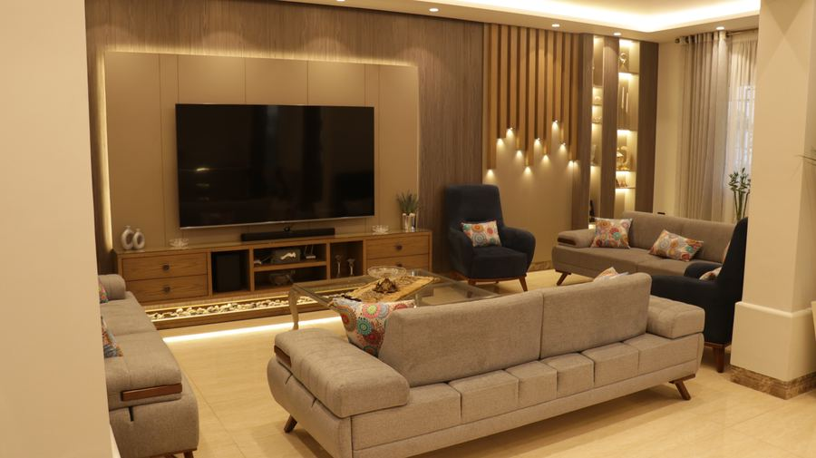
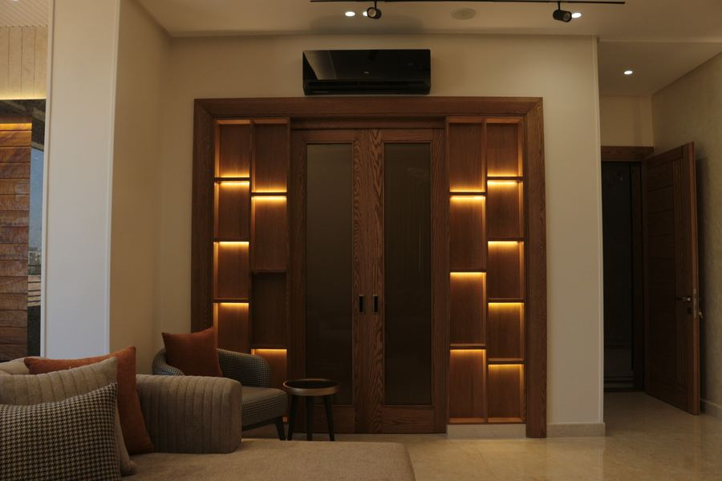
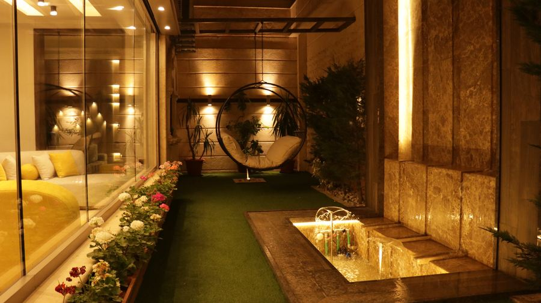
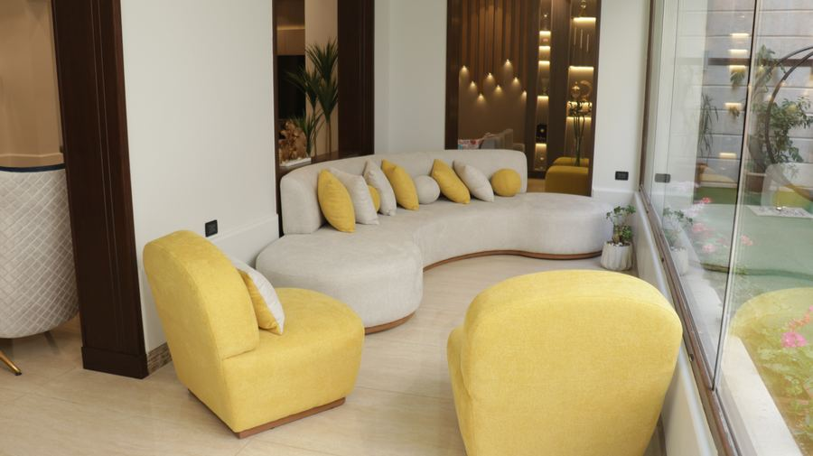
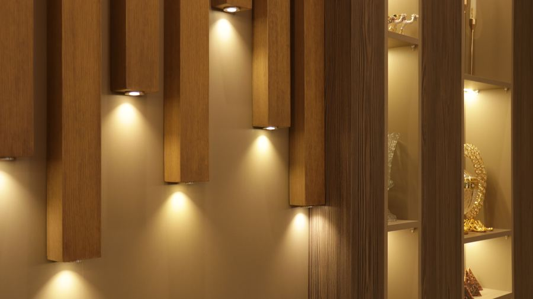
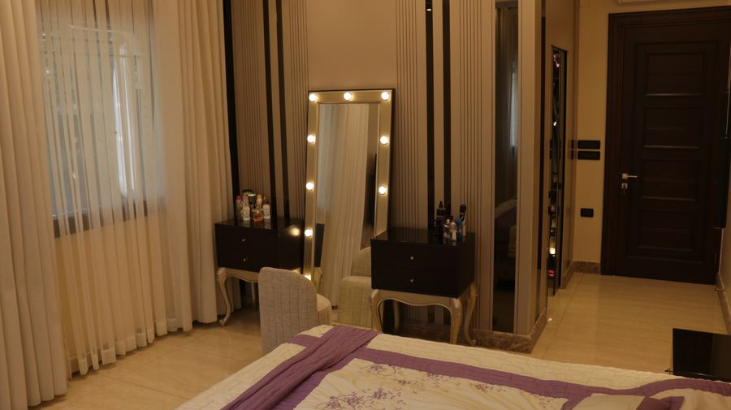
Direct
Avoid
How the system travels off the page — social templates, banners, and the printed and physical pieces a studio actually hands people. Same rules everywhere: sharp corners, hairline rule, one accent, photography doing the talking.
Social — Instagram
Reel · Carousel · GridReel cover
1080 × 1920 (9:16). Sharp-cornered frame, not a phone render — stays on-brand. Logo mark as avatar, ♡ / ↗ / ⋯ as the only UI glyphs.
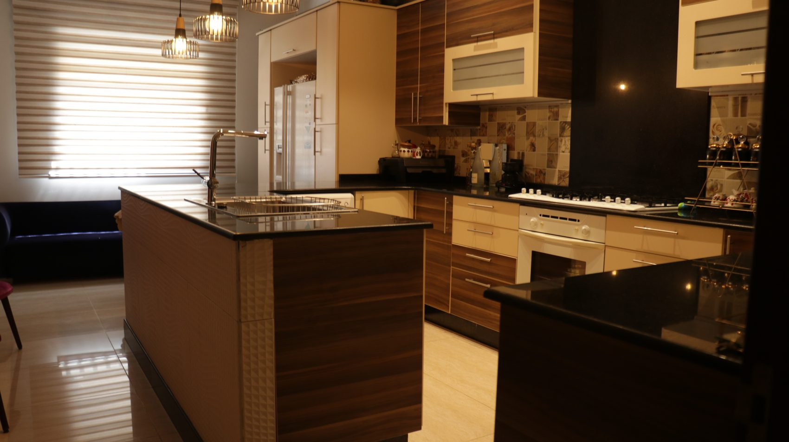
3/3Carousel post
1080 × 1350 per slide. Cover slide carries the project name; middle slides are detail shots; the last slide always closes on the handle.
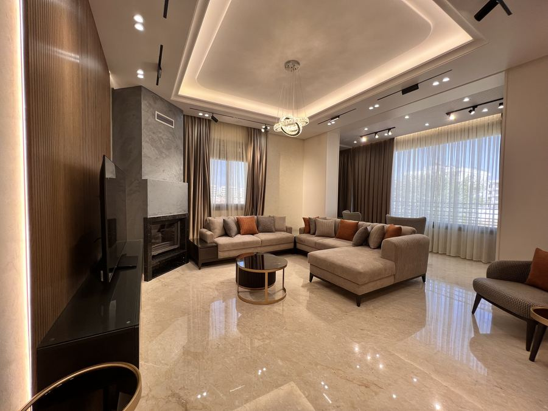
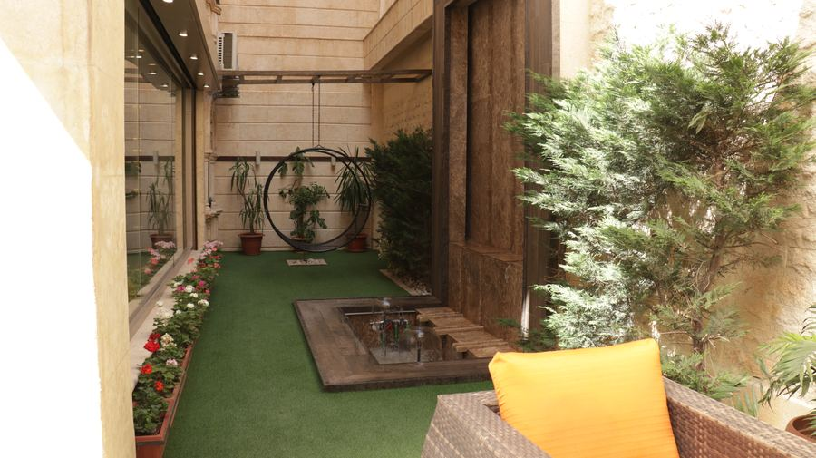
▶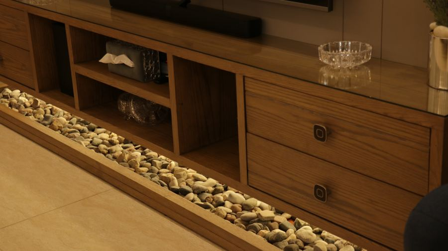
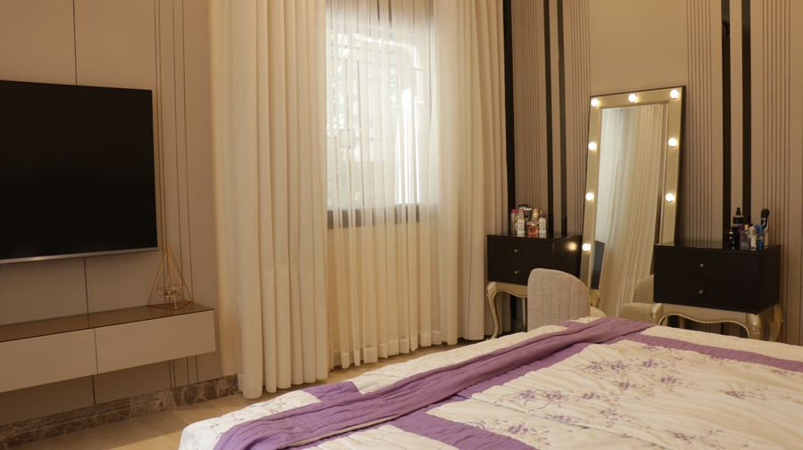
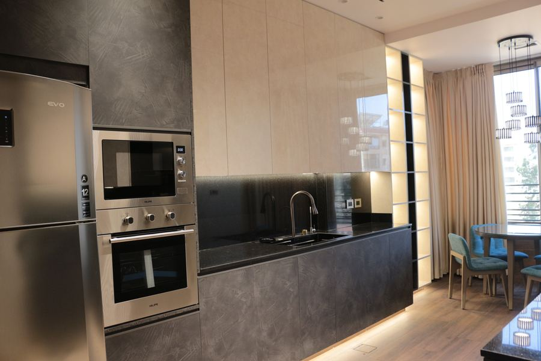
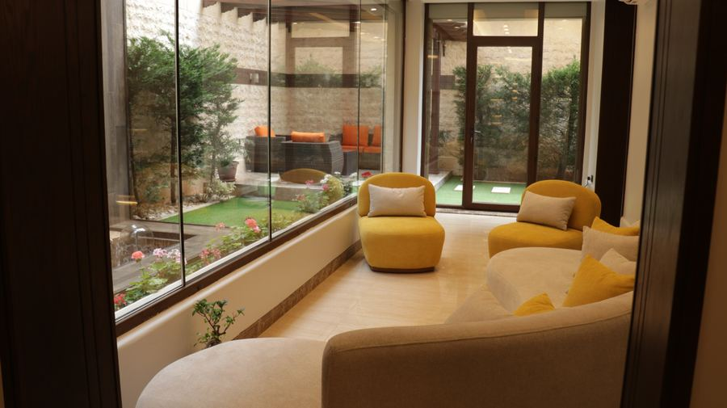
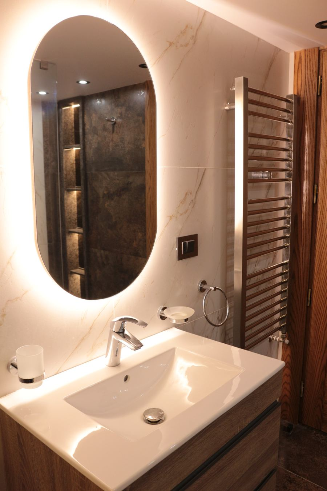
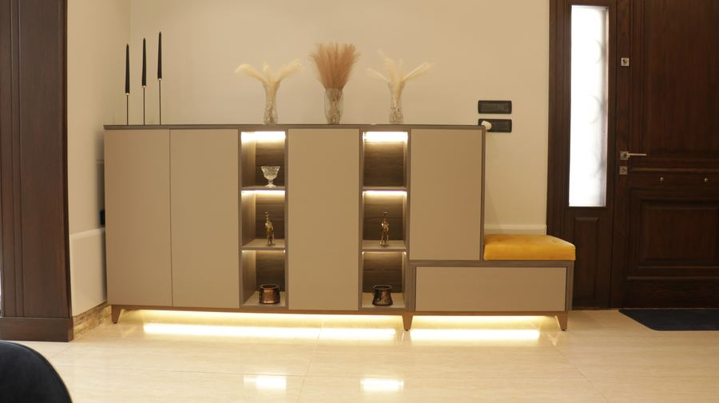
Profile grid
Reels (▶) and carousels (▣) sit inside the same warm, wide, dusk-lit photography as everything else — the grid should read as one project, not nine posts.
Picture Banners
Landscape · PortraitLandscape banner
1200 × 630 — website hero, Facebook cover, link previews. Diagonal scrim keeps the wordmark and headline legible over any photo.
Portrait banner
1080 × 1350 — poster, Story ad, print flyer. No app chrome, so it reads equally well printed or boosted.
Print & Signage
Business Card · Site SignBusiness card
85.6 × 54 mm. Ink front carries only the mark; every contact detail lives on the paper-white back, right where a hand expects to find it.
This home is being designed by Final Decor.
Site hoarding board
Vinyl-printed sign for the project entrance while work is underway — type-led and legible from the street, the terracotta rule doing the only colour work.
Do
Don’t